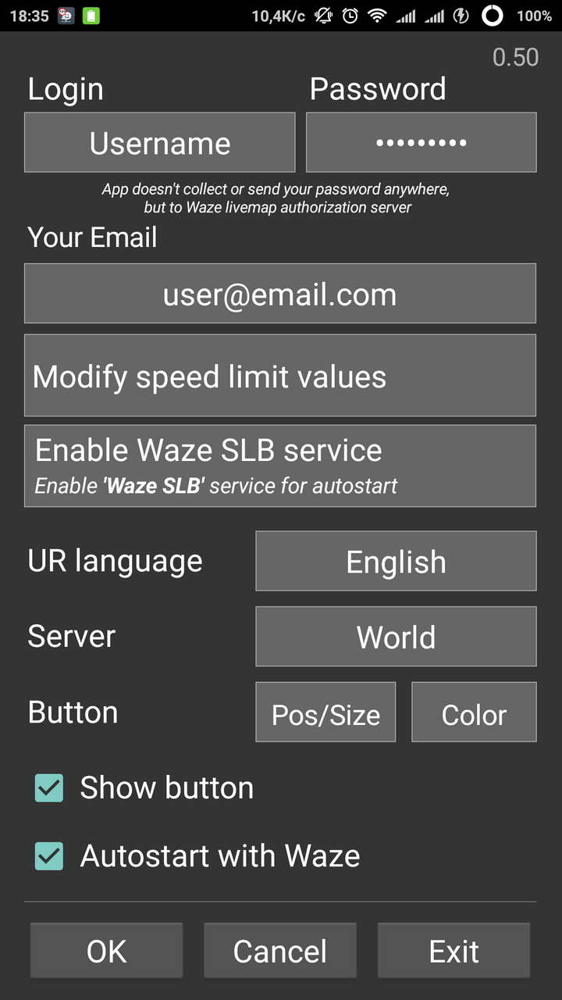

Description
The main idea is to imitate tap on the speedometer icon to display Speed Limit form. Waze SLB automatically starts and closes with Waze (on Android 4.1+ it is neseccary to enable Waze SLB service in phone settings for this feature).
After the first start you need to enter your WME username and valid email.
Show button - display the Waze SLB button over the speedometer icon or make it invisible.
Autostart with Waze - enable or disable autostart.
Features:
- app autostarts with Waze (can be disabled in settings) and closes automatically if Waze is closed or another app is on top. For autostart on Android 4.1+ please make sure that the Waze SLB service in enabled in phone settings (Accessibility service);
- app won't send URs if valid Name/Email is not filled or if coordinates weren't received;
- coordinates are obtained when tapping the speedometer icon, then you can choose the speed when it's convenient;
- configuration form appears at the first start and can be called from the notification;
- user-defined speed limit values;
- on the config form: tap on version - check the updates, long tap - open url containing all the versions;
- if the version number is red - new version is available.
Known issues:
- since it uses overlapping button over the speedometer icon (red circle) the corresponding region is not available for tapping in Waze, keyboard etc. Workaround: long tap on the button hides it for 5 seconds, this will allow you to tap under the button.
Topic on Waze forum
Previous versions:
Waze_SLB_v0.35b.apk
Waze_SLB_v0.34b.apk
Waze_SLB_v0.33b.apk
Waze_SLB_v0.32b.apk
Waze_SLB_v0.31b.apk